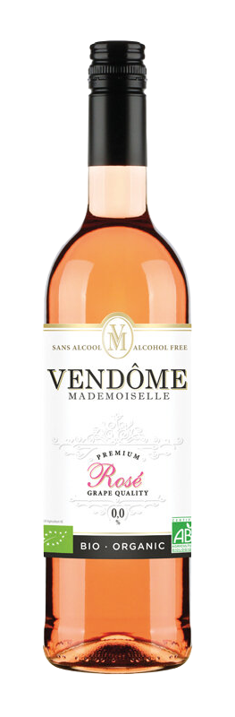

VENDÔME MADEMOISELLE ROSÉ

Acheter
Vendôme Mademoiselle Rosé Tempranillo, la boisson sans alcool Vendôme Mademoiselle Rosé, à base de vin désalcoolisé dont les ingrédients sont issus de l’agriculture biologique, est dotée d’une belle robe rose pâle aux légers reflets grenadines.
À l’image des meilleurs vins rosés alcoolisés, elle dévoile un nez expressif de petits fruits rouges, de framboise, de cassis et d’agrumes. Elle se déguste à l’apéritif, en tête à tête ou entre amis, en été comme en hiver.
A servir entre 6 et 8°C.
À l’image des meilleurs vins rosés alcoolisés, elle dévoile un nez expressif de petits fruits rouges, de framboise, de cassis et d’agrumes. Elle se déguste à l’apéritif, en tête à tête ou entre amis, en été comme en hiver.
A servir entre 6 et 8°C.
DÉTAILS :
Calories pour 100 ml : 20,9 calories
Degré d’alcool : moins de 0,0 % alc./vol
VENDÔME SANS BULLES ROSÉ
Vendôme Mademoiselle Rosé accompagne avec bonheur les plats épicés, les mets exotiques ainsi que les grillades et les salades composées.